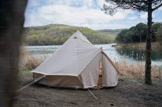

Welcome to Team_TLC’s documentation!¶
Team_TLC (Thermal and LifeCycle) document is used to record results of architecture and design activities for Life Cycle Management (power control). The document contains high level and detailed design. It describes the behavior and how the SW interact with the remaining system.It also has a Separate Docupedia page GM VCU - Life Cycle Management and offers a simple and intuitive API.
Check out the Bosch Scope section and GM Scope section for further information, on how VIP AutoSAR handling in both the Bosch scope and GM scope.
This line is check italics
This line is being checked for BoldFace
and for Backquotes can be
textfor code example
Note
This document is a work in progress. It is not yet complete and may be subject to change.
Images¶

Check out the Images section for further information.
Figure¶

Software Development LC(Caption_a simple paragraph).¶
The legend consists of all elements after the caption. In this case, the legend consists of this paragraph and the following table:
Symbol |
Meaning |
|---|---|
|  | Campground |
Lake |
Check out the Figure section for further information.
Tables with Title¶
A |
not A |
|---|---|
False |
True |
True |
False |
CSV Tables¶
Treat |
Quantity |
Description |
|---|---|---|
Albatross |
2.99 |
On a stick! |
Crunchy Frog |
1.49 |
If we took the bones out, it wouldn’t be crunchy, now would it? |
Gannet Ripple |
1.99 |
On a stick! |
List Tables¶
Treat |
Quantity |
Description |
|---|---|---|
Albatross |
2.99 |
On a stick! |
Crunchy Frog |
1.49 |
If we took the bones out, it wouldn’t be crunchy, now would it? |
Gannet Ripple |
1.99 |
On a stick! |